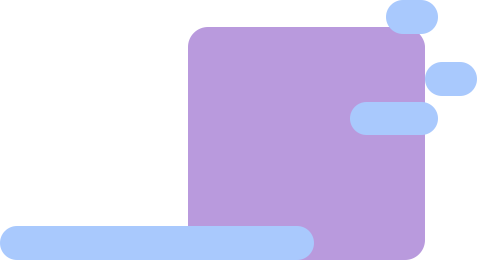

Módulo: Escola e redes sociais nas adolescências e juventudes
Sobre as autoras
Ana Carina Stelko-Pereira
Psicóloga (UFPR), Especialista em Terapia Analítico-Comportamental (Paradigma), Mestre em Educação Especial (UFSCar), Doutora em Psicologia (UFSCar) e professora adjunta da Universidade Federal do Paraná e do Programa de Pós-graduação em Educação. Desenvolve trabalhos teórico-práticos com relação aos temas bullying, indisciplina e habilidades socioemocionais. Vice-coordenadora do Observatório do Clima Institucional e Prevenção das Violências em Contexto Educacional: Xará (https://linktr.ee/observatorioxara)
Sabrina Martins Barroso
Psicóloga pela Universidade Federal de São João del-Rei (UFSJ), Especialista em Desenvolvimento Humano (Universidade Federal de Minas Gerais – UFMG), Avaliação Psicológica (CRP 04) e Terapia Cognitivo-Comportamental (Faculdade Metropolitana). Mestre em Psicologia e Doutora em Saúde Pública (Epidemiologia) pela UFMG. Professora associada da Universidade Federal do Triângulo Mineiro (UFTM). Líder do Grupo de Pesquisa Núcleo de Avaliação Psicológica e Investigações em Saúde (NAPIS) e do Grupo de Trabalho de Pesquisa em Avaliação Psicológica da Associação Nacional de Pesquisa e Pós-graduação em Psicologia (ANPEPP). Desenvolve pesquisas sobre saúde mental de estudantes, entre outros temas.
Sobre o Módulo
Módulo: Escola e redes sociais nas adolescências e juventudes
Carga horaria: 30 horas

OBJETIVOS DE APRENDIZAGEM
Promover a reflexão sobre o uso das redes sociais, sua influência e impacto na saúde física e mental de adolescentes e jovens, bem como sobre o papel da escola como espaço potente nas relações interpessoais e na escuta acolhedora.

Apresentação do módulo
Todos sonhamos com um país em que a educação seja valorizada; com um mundo em que todos os jovens possam desenvolver espírito curioso e relacionamentos felizes e respeitosos, que os preparem para vidas plenas e significativas; com um país em que não precisemos nos preocupar com qualquer tipo de violência.
No Brasil, isso parece utópico, e, talvez, seja mesmo. Apenas para ilustrar, em 2021, 10,8% dos jovens entre 15 e 17 anos estavam fora das escolas (INSTITUTO BRASILEIRO DE GEOGRAFIA E ESTATÍSTICA, 2022a). Ao verificar a violência em nosso contexto, apenas em 2019 houve 45.503 homicídios no território nacional (INSTITUTO DE PESQUISA ECONÔMICA APLICADA; FÓRUM BRASILEIRO DE SEGURANÇA PÚBLICA; INSTITUTO JONES DOS SANTOS NEVES, 2021), e essa não é a única forma de violência que enfrentamos todos os dias.
Há realmente muita violência no mundo e podemos ter a percepção de que novas formas de maldade surgem a cada dia. Com o avanço da tecnologia, passamos a ter medo também de que nossos cartões de crédito sejam clonados, que nossa intimidade seja vazada na internet ou que alguém que amamos seja vítima de cyberbullying.
Esses dados nos afastam da nossa visão utópica, certo? Mas o que será do mundo sem os sonhadores? É por isso que, neste módulo, convidamos você a dar uma chance ao “talvez” e a pensar no que podemos fazer para que um raio de esperança se mantenha, mesmo quando a violência e a escuridão se aproximam de nós.
O “talvez”, aqui, terá a função de nos lembrar de que temos amigos ou de que podemos usar as redes sociais para ficar próximos de pessoas de quem gostamos; será como aquele bilhete que um professor recebe com notícias de um ex-aluno agradecendo o incentivo que recebeu enquanto estudava e contando o impacto que isso teve em sua vida. Esses são exemplos de momentos em que a mágica acontece!
Sim, vamos conversar sobre vários temas, mas a escola será um dos assuntos centrais, porque, para termos uma chance de chegar à nossa utopia, a escola terá um papel fundamental. Por isso, este é nosso convite a você: falarmos sobre a realidade das escolas brasileiras e sua influência nesse período especial que é a adolescência. Vamos apresentar potencialidades e dificuldades relacionadas ao contexto escolar e o impacto das redes sociais e do bullying nos jovens e em sua saúde mental. No entanto, também falaremos sobre alternativas. E, “talvez”, ao abordar esses assuntos, poderemos caminhar alguns passos rumo à utopia em que algum dia queremos viver.
Para dar mais sentido a esse caminho, traremos um caso que, embora ilustrativo, poderia estar no cotidiano de muitos de nós. Pretendemos, em especial, mostrar que a escola pode ser um imenso “talvez” para esse assunto, um espaço criativo e potente não apenas para o aprendizado formal, mas, também, para a saúde mental dos jovens. A escola pode ajudar a mediar a relação dos adolescentes com as redes sociais e com alguns de seus medos e dúvidas. Pode ser um espaço acolhedor, que contribui para que os jovens entendam seus direitos e deveres e aprendam sobre respeito e a buscar ajuda, passando a ser outros fomentadores da utopia, novos adeptos do “talvez”.
A escola como espaço de possibilidades

A escola como espaço de possibilidades
O primeiro passo para qualquer ação é ter uma boa fotografia do contexto. Nos módulos 1 e 2, você conheceu mais sobre os adolescentes, como os aspectos de sua saúde mental e as violências a que estão mais sujeitos. Neste módulo, nossa conversa abordará vivências nas escolas, as relações dos adolescentes com as redes sociais e alternativas envolvendo a escola, a família e os próprios adolescentes para melhorar a convivência dentro e fora do mundo das telas.
A escola ocupa papel central na formação dos cidadãos e na ampliação das possibilidades profissionais das pessoas. Indivíduos com Ensino Superior completo, no Brasil, ganham, em média, 2,4 vezes mais do que quem terminou apenas o Ensino Médio (ORGANIZAÇÃO PARA A COOPERAÇÃO E DESENVOLVIMENTO ECONÔMICO, 2018). No entanto, a escola é bem mais do que um trampolim profissional. Ela é uma das memórias afetivas mais importantes na vida de muitos de nós.
A escola pode ser parte do problema ou uma das forças mais ricas que temos para o nosso “talvez”. Se nossa experiência foi boa, podemos lembrar para sempre dos colegas de infância, do gosto do lanche que era servido na sexta-feira, da professora que nos ensinou a ler, da primeira pessoa que quisemos namorar e de vários outros momentos especiais em nossas vidas que ocorreram na escola. Por outro lado, se tivemos a tristeza de frequentar uma escola pouco afetiva, que não tinha condições de atender às nossas necessidades ou em que o bullying era prática constante, a história muda. No lugar de lembranças felizes, podemos carregar traumas e cicatrizes que também ficarão conosco por toda a nossa vida.
O objetivo explícito das escolas envolve ensinar conteúdos acadêmicos, mas todos podemos ver que seu alcance vai muito além disso. Na escola, aprendemos regras sociais e a negociar fora de nossas famílias; convivemos com pessoas com hábitos e culturas distintas da nossa, o que nos permite desenvolver identidade e tolerância; mesclamos obrigações e lazer, aprendendo a valorizar responsabilidade e descanso; e, se nossa escola for cuidadosa, ainda temos a chance de desenvolver nossas competências emocionais, como aprender a reconhecer como nos sentimos, a identificar como as pessoas à nossa volta se sentem e que devemos avaliar nossas ações para evitar as consequências de agir sem pensar. O impacto positivo de cuidar do bem-estar e das competências emocionais dos estudantes tem sido visto em diversos aspectos da vida deles, incluindo em sua capacidade de aprender (DIAS-VIANA; NORONHA, 2022).
A importância do desenvolvimento de competências socioemocionais tem sido considerada tão importante que Secretarias Estaduais da Educação têm incluído o tema em suas pautas. Para citar apenas algumas: Secretaria do Estado de São Paulo (2019), Secretaria do Estado da Educação e do Desporto do Amazonas (2020) e Secretaria do Estado do Mato Grosso (2021) discutiram esse tema ao longo dos últimos anos, como pode ser avaliado verificando as pautas debatidas em seus sites oficiais.
Saiba mais
Quer entender mais sobre competências socioemocionais?
Convidamos você a ler sobre o tema no site do Instituto Ayrton Senna:
Ensinar os adolescentes a respeitarem a si próprios e aos colegas está ainda mais complexo. A escola precisa ajudá-los a lidar com uma vida híbrida – metade ao vivo e metade on-line – e a combater a violência entre pares que ocorre nesses ambientes.
Feedback positivo: Os educadores (e adultos em geral) sabem que precisam orientar os adolescentes sobre o uso da tecnologia, mas, por vezes, não sabem exatamente quais riscos esse uso oferece. O interesse em ajudar é ótimo e poderá ser potencializado se pensarmos em pontos-chave para essa conversa.
Feedback orientador: É importante orientar os adolescentes sobre permissões ocultas solicitadas por aplicativos e jogos que instalamos, pois podemos estar autorizando o uso de nossas informações, localização e fotos para fins que não conhecemos. Pergunte-se por que um aplicativo ou jogo precisa acessar as fotos do seu aparelho e seus documentos. Se achar que estão pedindo mais do que o necessário, não instale o aplicativo ou jogo. Em especial, precisamos ficar atentos a se os aplicativos e jogos serão ou foram instalados em aparelhos de telefone com acesso a aplicativos de banco ou cartão de crédito, pois podem ser usados para roubar nossas senhas e dinheiro.
É igualmente importante alertar para a exposição excessiva de nossa vida, mostrando o risco de postar fotos com uniformes escolares e fotos íntimas ou de compartilhar nossa localização. Esses dados podem ser usados por pessoas mal-intencionadas. Quando pensamos especialmente nos adolescentes, precisamos mostrar que as informações e fotos publicadas na internet podem ser alteradas ou parciais, sendo perigoso, portanto, tomá-las como representações da verdade e parâmetros para definir nossa beleza, valor ou autoestima. Quanto ao cyberbullying, é necessário mostrar as formas que ele pode assumir e o que fazer para não nos tornarmos vítimas.